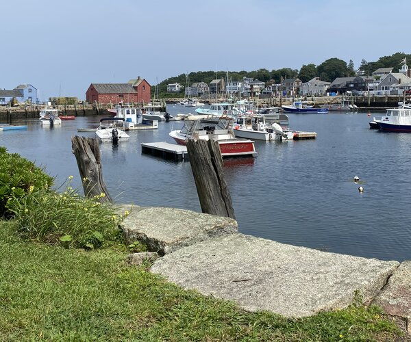

About me
Kaitlyn-marie A. Kryzanski
maybe a little joke, soft paragraph to enter in. maybe a little joke, soft paragraph to enter in. maybe a little joke, soft paragraph to enter in.
I was born and raised in Trumbull, Connecticut by a large, strong-willed, and self-made family based out of Stratford. I grew up loving the Long Island Sound, family, and the value of hard work. After graduating high school in 2020, I was able to enroll as a student at the University of Maryland where I was able to begin taking courses in the STEM field. Shortly thereafter, I found that I did not have much of an idea of where these courses would take me, or at the very least, where I wanted them to take me. After some much needed time in the 'real world', I ultimately found a program offered by Brigham Young University that aligned with not only my values, but also the path that I felt suited me. I was able to continue working my full-time job while also working towards a degree in Computer Science part-time.
I have been able to meet a lot of great people along the way as I have traveled and worked through these past couple of years. Though I realize my path has not been the most traditional, I feel that ultimately the time I have spent working and learning to understand my skillset, has been beyond valuable to my future. I feel that life is more fulfilling when we take the time to further our education in as many areas as possible. I look forward to seeing where my degree in Computer Science will take me, and I am enthusiastic about opportunities in which I am able to combine my experience with that of others.
I am interested in finding opportunities wherein I can bring my experience in Computer Science together with my overall knowledge of Business Development and the psychology behind what makes a strong business work. So far, I have enjoyed working with various teams and businesses where I was able to build upon my perceptions of what makes a business work, and what is needed on the employees' side in terms of bringing their best work to the table. As I have been able to connect with more people, I feel that I have been able to grow in my awareness of how people are truly motivated towards progress, and in this understanding, I have found that I am more personally more motivated to being able to create a successful business!